El presente manual es una guía técnica para la configuración completa del catalogo de medicamentos para el Centro Médico ABC, sus flujos y reglas son propias de la institución, con Tasy EMR 5.03.
Con el objetivo de tener una lectura ágil se explicaciones breves y diagramas. A menudo se incluyen hipervínculos para evitar la repetición de pantallas, y crear una navegación referencial.
Nota: LA información como notas aparece en cursiva al final de un bloque para incluir flujos alternos o configuraciones adicionales, así como algunas excepciones a las reglas generales.
En el caso de necesitar nombrar algo importante:
Si una modificación es capaz de entorpecer o detener un flujo se encierra dentro de la casilla de importante
En el caso de las políticas
Las políticas del Centro Médico ABC tienen la importancia jerárquica más alta, la mejor práctica es siempre consultar la versión más reciente.
También tablas comparativas
| Nombre | Características |
|---|---|
| Nota | Amplia las instrucciones que se y da flujos internos |
| Importante | Alerta de modificaciones que pueden detener un flujo |
| Política | Maxima regla, esta manda sobre la configuración de Tasy |
De forma muy breve, el sistema Tasy EMR opera mediante un modelo de base de datos relacional jerárquica que vincula catálogos maestros de artículos con reglas de negocio predefinidas. Esto se traduce en que ningún valor puede ser creado si no se configura un dato maestro y después una regla.
Ejemplo: para configurar una alerta, primero se registran los elementos en el catálogo. Al crear la vía "Intravenosa" y el medicamento "Potasio", el sistema les asigna automáticamente un número de identificación a cada uno (por ejemplo, ID 1 e ID 2). La regla de seguridad se programa uniendo exclusivamente esos números (ID 1 + ID 2 = Alerta). De este modo, si posteriormente se edita el texto de "Intravenosa" a "I.V.", la alerta sigue funcionando sin requerir ajustes, porque la base de datos continúa evaluando la conexión entre los códigos numéricos originales.
Inicialmente debemos registrar la estructura que contendrá los ítems que pertenecen a una misma clasificación, con el fin de agrupar y administrar cada material de acuerdo con su uso. Tasy permite hacer esta clasificación en base a tres niveles Grupo, Subgrupo y Clase.
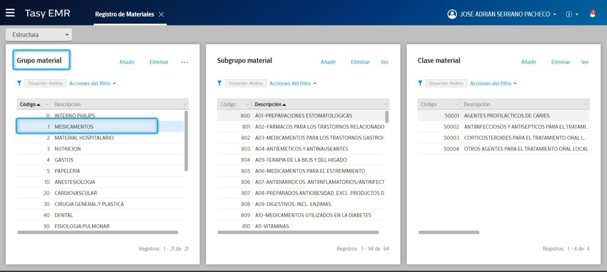
Estos a su vez pueden inactivarse o bien, configurarse:
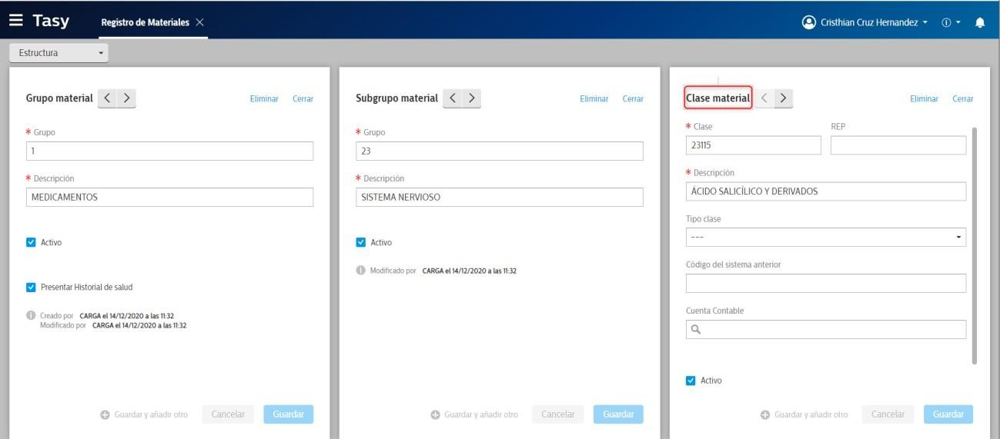
Para grupo:
| Campo | Descripción |
|---|---|
| Grupo | Código numérico o identificador único del grupo del material. Corresponde al primer nivel de agrupación dentro de la estructura. |
| Descripción | Describir el nombre o denominación del grupo de materiales (ej. MEDICAMENTOS). |
| Activo | Marcar para indicar si la situación del grupo de material está activa en el sistema. |
| Presentar Historial de salud | Informar si debe presentar en el buscador de alergias en el histórico de salud. |
Para subgrupo
| Campo | Descripción |
|---|---|
| Grupo | Código del subgrupo del material. |
| Descripción | Describir el nombre del subgrupo del material (ej. SISTEMA NERVIOSO). |
| Activo | Informar si la situación del subgrupo del material está activa. Para finalizar el registro dar clic en guardar. |
Y para Clase Material
| Campo | Descripción |
|---|---|
| Clase | Generado por el sistema, con la secuencia interna de la tabla (ej. 23115). |
| REP | Informar la orden de presentación del ítem en la prescripción electrónica. |
| Descripción | Describir el nombre de la clase del material (ej. ÁCIDO SALICÍLICO Y DERIVADOS). |
| Tipo clase | Seleccionar el tipo de clase del material. |
| Código del sistema anterior | Código del sistema integrante. |
| Cuenta Contable | Informe la cuenta contable que pertenece a esta clase. |
| Activo | Identificar si la situación de la clase del material está activa. Para finalizar el registro dar clic en guardar. |
Estos grupo permiten extraer informes y a su vez usarse para configurar reglas
La interfaz gráfica de Tasy nos permite capturar esta información y reglas por medio de formularios dinámicos, la visión y edición de los mismos a su vez están controlados por la información del “Establecimiento”, “Perfil” y Sector”.
Para la creación de registros y reglas usaremos los formularios contenidos en “Funciones” y “Utilitarios”, aquí también vamos a previsualizar la funcionalidad para el usuario final.

Los principales para creación/edición son “Registro de Materiales” y “Medicamentos”

Dentro de Registro de Materiales se encuentran los siguientes campos para ingresar o seleccionar información, aquellos marcados con asterisco rojo son obligatorios.
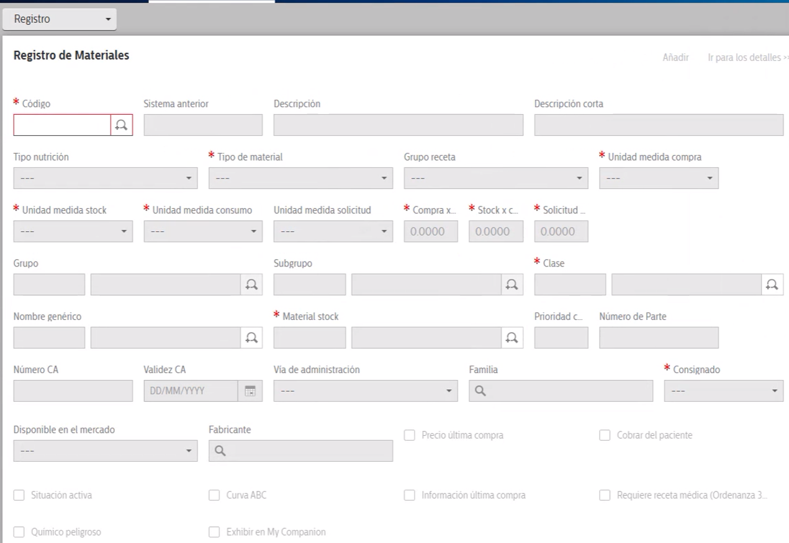
Los campos para ingresar o seleccionar información son:
| Campo | Descripción |
|---|---|
| Código | Código del material, definido por el sistema. No modificable. |
| Sistema anterior | Informar el código del material o medicamento en el sistema anterior (SAP). |
| Descripción | Informar la descripción del material. |
| Descripción corta | Informar la descripción reducida del material. Esta información es utilizada en las impresiones de etiquetas. |
| Tipo de material | Seleccionar el tipo de material. |
| Grupo Receta | Seleccionar el grupo de receta. |
| Unidad medida de compra | Selecciona la unidad de medida de compra, por ejemplo: caja, paquete, sobre. |
| Unidad de medida consumo | Seleccionar la unidad de medida de consumo, por ejemplo: pieza, frasco, ámpula |
| Unidad medida solicitud | Seleccionar la unidad de medida de solicitud del material, por ejemplo: pieza, frasco, ámpula. |
| Compra x stock | Informar la cantidad que contiene en una unidad de compra con relación a unidad de stock. |
| Solicitud mínima x consumo | Informar la cantidad mínima de solicitud a la farmacia. |
| Stock por consumo | Informar la cantidad que contiene en una unidad de stock con relación a unidad de consumo. |
| Unidad medida stock | Seleccionar la unidad de medida de stock. |
| Grupo | Código del grupo del material. |
| Subgrupo | Código del subgrupo del material. |
| Clase | Seleccionar la clase del material. |
| Nombre genérico | Buscar el medicamento genérico (previamente registrado) cuando el medicamento sea el comercial. |
| Material Stock | Buscar el material donde debe ser controlado el stock. |
| Días | Informe el número de días de validez. |
| Horas límite de uso | Informa el número de horas que un material puede ser utilizado por el paciente (Sirve para exigir justificación cuando sea pedida para utilizarse con plazo inferior al del registro) |
| Dosis usual por horario | Informar la dosis máxima usual por horario de administración. |
| Prioridad comercial | Informe el orden de prioridad entre los medicamentos comerciales de un mismo genérico (mayor número es mayor prioridad) |
| Número de parte | Informar el código del fabricante del producto. |
| Vía de administración | Seleccionar la vía de administración del medicamento. |
| Familia | Seleccionar la familia a la cual el material o medicamento pertenece. |
| Consignado | Identificar si el material es consignado, no consignado o ambos. |
| Ubicación | Seleccionar la localización adecuada para el material o medicamento. |
| Disponible en el mercado | Informar si el material está disponible fácilmente en el mercado para compra. |
| Fabricante | Seleccionar el fabricante del material. |
| Cobrar del paciente | Informar si el material debe ser cobrado en la cuenta del paciente |
| Situación activa | Informar si la situación del material está activa o no |
| Obliga vía aplicación | Informar si es obligatorio la información de la vía de aplicación |
| Precio última compra | Identificar si se debe actualizar la tabla de precios. Solamente para actualización de la tabla de precios del material que es hecho en el momento del cálculo de la factura y no tiene ningún vínculo con información de la última compra. |
| Información última compra | Identificar si se debe mostrar la información de última compra de este material |
| Curva ABC | Identificar si el material formará parte del cálculo de la curva ABC |
| Necesita receta | Marque si el medicamento necesita receta especial para medicamentos controlados |
| Químico peligroso | Informar si este material es o contiene algún químico considerado peligroso |
Y las casillas
| Casilla | Descripción |
|---|---|
| Situación activa | Informar si la situación del material está activa o no. |
| Obliga vía aplicación | Informar si es obligatorio la información de la vía de aplicación. |
| Precio última compra | Identificar si se debe actualizar la tabla de precios. Solamente para actualización de la tabla de precios del material que es hecho en el momento del cálculo de la factura y no tiene ningún vínculo con información de la última compra. |
| Información última compra | Identificar si se debe mostrar la información de última compra de este material. |
| Curva ABC | Identificar si el material formará parte del cálculo de la curva ABC |
| Necesita receta | Marque si el medicamento necesita receta especial para medicamentos controlados. |
| Químico peligroso | Informar si este material es o contiene algún químico considerado peligroso. |
Este registro es para todos los materiales de manera independiente al campus, para agregar un material al campus correspondiente de la sesión debemos “ir para los detalles”,
Los datos del establecimiento permiten saber a Tasy el comportamiento del Ítem en las distintas funciones del sistema además de proveer información para el resurtimiento del material:
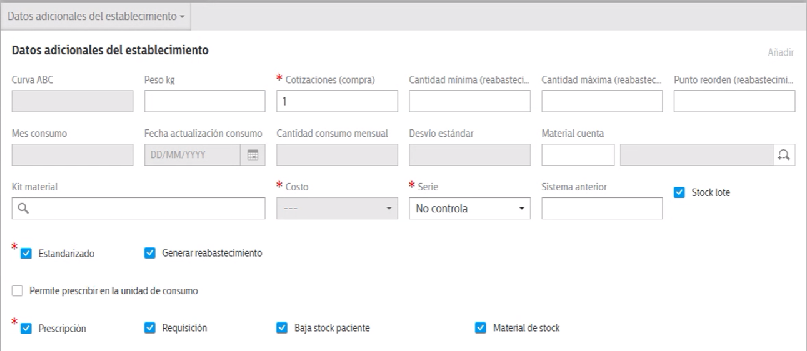
| Campo | Descripción |
|---|---|
| Curva ABC | Generado por el sistema con la posición ABC del material en el establecimiento. |
| Peso kg | Informe el peso en kg. |
| Cotizaciones | Informar el número mínimo de cotizaciones que el material debe tener en la compra. |
| Cantidad mínima (resurtimiento) | Calculado por el sistema en el cálculo de resurtimiento. Para obedecer valor informado fijo, los campos de días del proveedor, días de stock mínimo y días de intervalo deben quedar en cero. |
| Cantidad máxima (resurtimiento) | Generado por el sistema con el stock máximo que deberá existir en este establecimiento |
| Punto de reorden (reabastecimiento) | Generado en el cálculo del punto de pedido. Stock mínimo + (consumo diario * días proveedor). Para obedecer valor informado fijo, los campos de días de proveedor, días de stock mínimo y días de intervalo deben estar en cero |
| Mes de consumo | Generado por el sistema con el número de meses utilizados para cálculo del consumo mensual |
| Fecha actualización consumo | Generado por el sistema con la fecha de actualización del consumo mensual y punto de pedido |
| Cantidad consumo mensual | Información generada de forma automática por el sistema cuando se calcula el punto de pedido en la valoración |
| Desvío estándar | Información generada de forma automática por el sistema, con el desvío predeterminado del consumo de material, que es calculado por el sistema al momento de calcular el punto de pedido con base en las operaciones de consumo de stock y el número de meses informado en los parámetros de compras. |
| Material cuenta | Seleccionar el material que debe a interconsulta en la cuenta, sirve para mostrar en la cuenta cuando el material es diferente del material de stock, sirve para ser usado por la regla de material de la cuenta. |
| Kit material | Seleccionar el kit material que se aplica a este material, a la dispensación de materiales y medicamentos. |
| Costo | Seleccionar la clasificación de costo del material o medicamento. Servirá para identificar anticipadamente cuales ítems tienen costo alto y pueden ser rechazados por el convenio. |
| Serie | Identificar si el material tiene el control por el número de serie. |
| Sistema anterior | Código del sistema anterior |
Y las casillas
| Casilla | Descripción |
|---|---|
| Stock lote | Si genera lotes por cada compra, permite llevar la trazabilidad |
| Estandarizado | Informar si el material es o no estandarizado para utilización en la prescripción médica. |
| Generar resurtimiento | Informar si el sistema debe generar resurtimiento para este establecimiento. Para generar el resurtimiento el sistema aún identificará si el material está activo, si el mismo es controlador de stock y si existe en los saldos de stock. |
| Permite prescribir en la unidad de consumo | Identificar si es permitida la prescripción de este medicamento en la unidad de consumo. |
| Prescripción | Identificar si el material puede ser prescrito. |
| Requisición | Identificar si el material puede ser requerido. |
| Baja stock paciente | Informar si el sistema debe bajar stock cuando provisto al paciente. |
| Material de stock | Informar si el sistema debe controlar el stock del material para este establecimiento. |
De igual manera dentro del modulo de registro de materiales tenemos el módulo de Farmacia
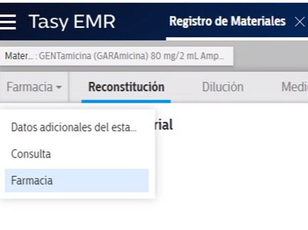
En esta carpeta son registrados los campos específicos de medicamentos; dilución, prescripción, conversión de unidades, entro otros. Esta información ayudará a la practicidad y datos estandarizados durante la prescripción.
El usuario responsable por la farmacia informa el diluyente estándar del ítem. La dilución puede ser restringida por sector, edad del paciente, peso, etc. Se divide en diferente condicionales el bloque si: contiene los campos para seleccionar las características que debe cumplir la prescripción:
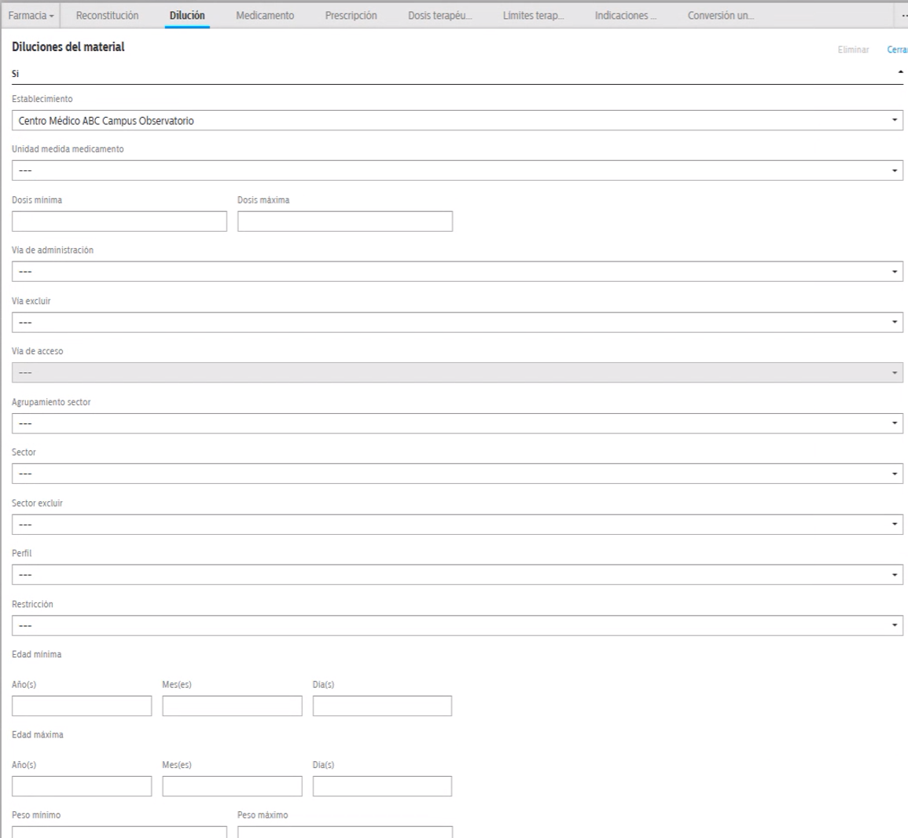
| Campo | Descripción |
|---|---|
| Establecimiento | Seleccionar el establecimiento o sede donde aplica la regla de dilución. |
| Unidad medida medicamento | Seleccionar la unidad de medida del medicamento para la dilución (ej. Ámpula). |
| Dosis mínima | Informar la dosis mínima requerida para aplicar la regla de dilución. |
| Dosis máxima | Informar la dosis máxima permitida para aplicar la regla de dilución. |
| Vía de administración | Seleccionar la vía de administración del medicamento (ej. IV - Intravenosa). |
| Vía excluir | Seleccionar la vía de administración que queda excluida de esta regla. |
| Sector | Seleccionar el sector o unidad de internación específica a la que aplica la regla. |
| Sector excluir | Seleccionar el sector o unidad que queda excluida de esta regla. |
| Perfil | Seleccionar el perfil de atención o tipo de paciente al que aplica la regla. |
| Restricción | Definir o seleccionar el tipo de restricción aplicable a la dilución. |
| Edad mínima (Año(s) / Mes(es) / Día(s)) | Informar el límite inferior de edad del paciente (en años, meses o días) para aplicar la regla. |
| Edad máxima (Año(s) / Mes(es) / Día(s)) | Informar el límite superior de edad del paciente (en años, meses o días) para aplicar la regla. |
El bloque entonces incluye los datos que se llenaran y las condiciones de las mismas:
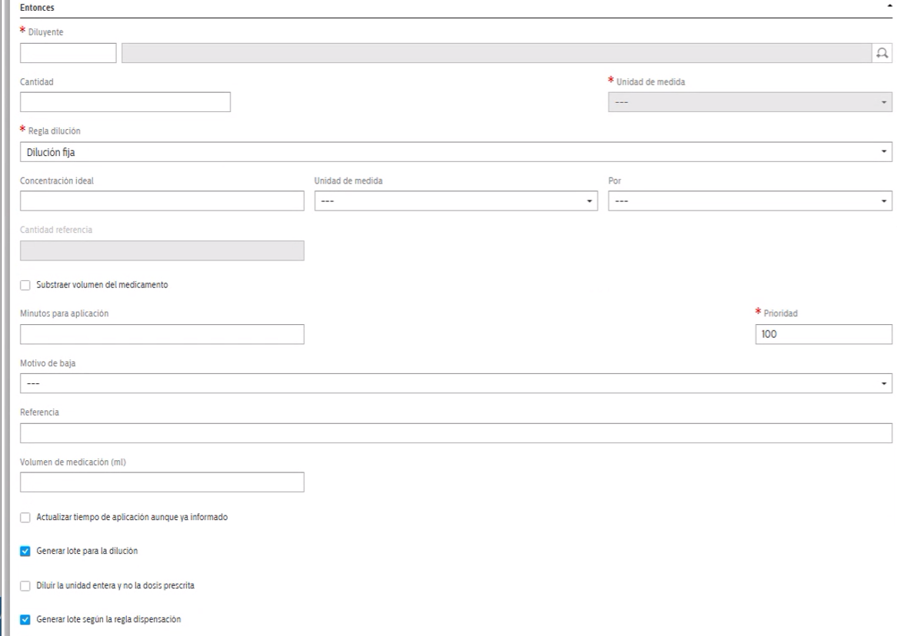
| Campo | Descripción |
|---|---|
| Diluyente | Buscar y seleccionar el código y descripción del vehículo o solución diluyente a utilizar. |
| Cantidad | Informar la cantidad del diluyente necesaria para la preparación. |
| Unidad de medida | Seleccionar la unidad de medida del diluyente (ej. Mililitros). |
| Regla dilución | Seleccionar la modalidad o tipo de regla para la dilución (ej. Dilución fija). |
| Concentración ideal | Informar el valor numérico de la concentración ideal final recomendada. |
| Unidad de medida (Concentración) | Seleccionar la unidad de medida correspondiente a la concentración ideal. |
| Por | Seleccionar el volumen o factor base sobre el cual se calcula la concentración ideal. |
| Cantidad referencia | Informar la cantidad de referencia utilizada para los cálculos de la dilución. |
| Substraer volumen del medicamento | Marcar si se debe restar el volumen del medicamento del volumen total de la dilución. |
| Minutos para aplicación | Informar el tiempo estimado o recomendado de infusión/aplicación en minutos. |
| Prioridad | Informar el orden de prioridad o jerarquía de la regla de dilución. |
| Motivo de baja | Seleccionar la razón por la cual se inactiva o da de baja la regla de dilución. |
| Referencia | Informar alguna observación, nota bibliográfica o fuente de consulta técnica para la dilución. |
| Volumen (ml) | Informar el volumen total resultante expresado en mililitros. |
| Volumen de medicación (ml) | Informar el volumen específico correspondiente solo a la dosis del medicamento en mililitros. |
Y las siguientes casillas
| Campo | Descripción |
|---|---|
| Actualizar tiempo de aplicación, aunque ya informado | Marcar si el sistema debe sobrescribir el tiempo de aplicación en la prescripción aunque el médico ya lo haya indicado. |
| Generar lote para la dilución | Marcar si el sistema debe generar automáticamente un control de lote para la mezcla/dilución preparada. |
| Diluir la unidad entera y no la dosis prescrita | Marcar si se debe calcular la dilución considerando la ampolla/unidad completa en lugar de la dosis exacta prescrita. |
| Generar lote según la regla dispensación | Marcar para asignar el lote de la dilución basándose en las reglas preconfiguradas de dispensación de la farmacia. |
En esta carpeta se registra la información básica del medicamento, como el principio activo, concentración, unidad de medida básica, etc. Los campos de unidad de medida, dosis límite y límite son utilizados para informar la dosis máxima
permitida por administración.
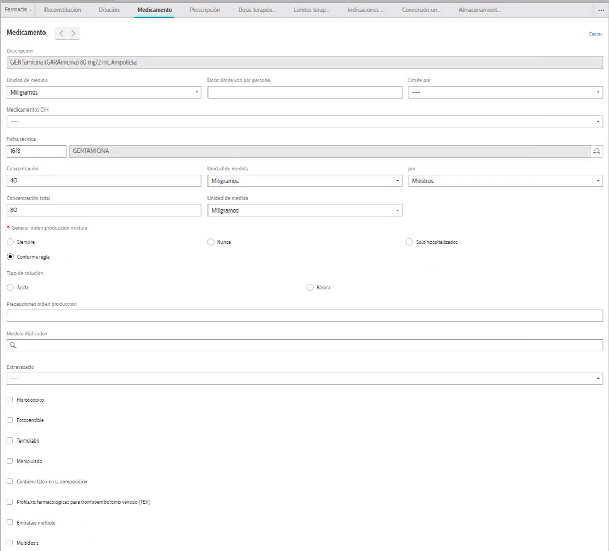
| Campo | Descripción |
|---|---|
| Medicamento CIH | Se selecciona el ingrediente activo relacionado al control de infecciones, esto permite un vínculo para detección de paciente con múltiples antibióticos. |
| Concentración | Permite informar la concentración de la administración, en el caso de unidosis se informa la concentración del empaque unitario; si es multidosis si informa la concentración total de la caja, frasco, etc. |
| Generar orden producción mixtura | Utilizado para la cabina de preparación, indica si el medicamento puede generar una orden de producción o no. |
| Tipo de solución | Informa si el medicamento en solución es ácido o básico. |
Y las siguientes casillas:
| Casilla | Descripción |
|---|---|
| Fotosensible | Identificar si el medicamento es foto sensible. |
| Termolábil | Identificar si este medicamento es un termolábil. Definición: Que tiende a descomponerse bajo la influencia del calor, es decir, compuestos termolábiles son compuestos que se descomponen por el efecto de la temperatura. |
| Hacer obligatoria justificación cuando dosis superar permitida | Indicar si al lanzar el material en la prescripción el sistema debe obligar la información de la justificación cuando la dosis informada fuere mayor que la permitida. |
| Manipulado | Indicar si el ítem es manipulado. |
| Contiene látex en la composición | Indicar si el material contiene látex en su composición. |
| Profilaxis farmacológicas para tromboembolismo venoso | Informar si se considera profilaxis mecánica para tromboembolismo venoso (TEV). |
| Embalaje múltiple | Indicar si el medicamento está en Embalaje Múltiple. |
| Multidosis | Identificar si el medicamento es o no de uso único. Por ejemplo: Novalgina 500 mg/ml Frasco 20 ml, médico prescribe 20 g |
La carpeta prescripción es una de las más importantes en el registro básico de medicamentos pues controla la visualización estándar del médico al seleccionar el medicamento desde la función CPOE, es decir, controla la dosis inicial, presentación, intervalo, uso, etc.
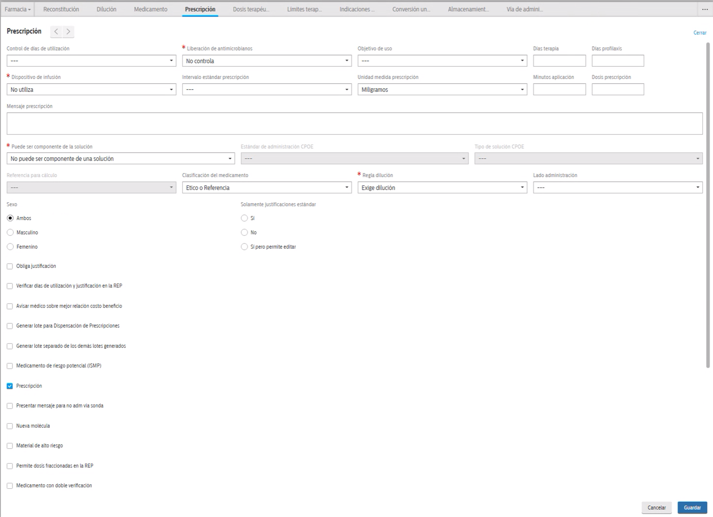
| Campo | Descripción |
|---|---|
| Control de días de utilización | Seleccionar la forma que el sistema debe controlar la utilización de los antimicrobianos en función de los días(Empezando desde el día 1, desde el día 0 o si no debe controlar). |
| Liberación de antimicrobianos | Seleccionar la forma que el sistema debe liberar la utilización de antimicrobianos. |
| Objetivo de uso | Seleccionar el fin de uso estándar del medicamento (profiláctico, terapéutico, etc). |
| Número máximo de días | Informar el número máximo de días seguidos que la persona puede recibir esa medicación (Se relaciona con el campo de control de días de utilización). |
| Dispositivo de infusión | Seleccionar el tipo de bomba que debe ser utilizada en la administración de la medicación o si no utiliza durante la administración. |
| Intervalo estándar de la prescripción | Informar el intervalo estándar de administración del ítem en la prescripción (cuando es un medicamento). |
| Unidad medida prescripción | Seleccionar la unidad de medida para la dosis inicial de la prescripción. |
| Dosis prescripción | Informar la dosis inicial de la prescripción. (Depende del registro de unidad de medida prescripción) |
| Minutos aplicación | Informar el número de minutos en que el medicamento debe ser aplicado en el paciente. En la prescripción el sistema colocará el número de horas y los minutos. Si son informados 150 minutos, en la prescripción será presentado como 2 horas y 30 minutos. |
| Puede ser componente de la solución | Identificar si el medicamento puede formar parte de una solución; por ejemplo, las tabletas que no pueden ser parte de una solución de ser indicada la opción correspondiente para que en la CPOE no exista la opción de vincularse a una. |
| Estándar de administración CPOE | Seleccionar si al prescribir este ítem se deben presentar las opciones de medicamento o de solución. |
| Tipo de solución CPOE | Si el ítem es una solución, se debe seleccionar la forma inicial de prescripción se recomienda la opción “Continua”. |
| Regla dilución | Identificar si el medicamento debe ser diluido en la aplicación al paciente. |
| Clasificación del medicamento | Seleccionar si el medicamento es de patente, similar o genérico. |
Y las siguientes casillas:
| Casilla | Descripción |
|---|---|
| Sexo | Marcar si el medicamento es de uso exclusivo en un sexo o es posible usar en ambos. |
| Generar lote para Dispensación de Prescripciones | Marcar el Check box para generar una orden de surtimiento (lote) al generarse la prescripción. |
| Medicamento de riesgo potencial | Marcar el Check box cuando el medicamento es de alto riesgo (Se visualizará una leyenda para el médico y la enfermera en sus respectivas funciones). |
| Permite editar dosis en la prescripción | Marcar el Check box para que el médico pueda editar los datos del medicamento al generar la prescripción. |
| Prescripción | Informar si el material puede ser prescrito, esto incluye copias/extensiones de prescripciones/planes terapéuticos. |
| Verificar si el medicamento está en duplicidad en el día | Marcar si el sistema debe verificar duplicidad del medicamento en el plan terapéutico en el día. |
| Material de alta vigilancia | Marcar el Check box si el ítem es de una alta vigilancia. |
| Permite dosis fraccionadas | Marcar si el ítem puede prescribirse en dosis fraccionadas (0.5 tabletas, por ejemplo) |
| Medicamento con doble chequeo | Informar si el medicamento requiere que dos personas verifiquen la administración. |
| Glucosa | Marcar cuando el ítem informado es glucosa |
Esta carpeta es un complemento de la carpeta “Prescripción” pues permite generar reglas a los medicamentos por peso, edad y/o unidades de medida especializadas
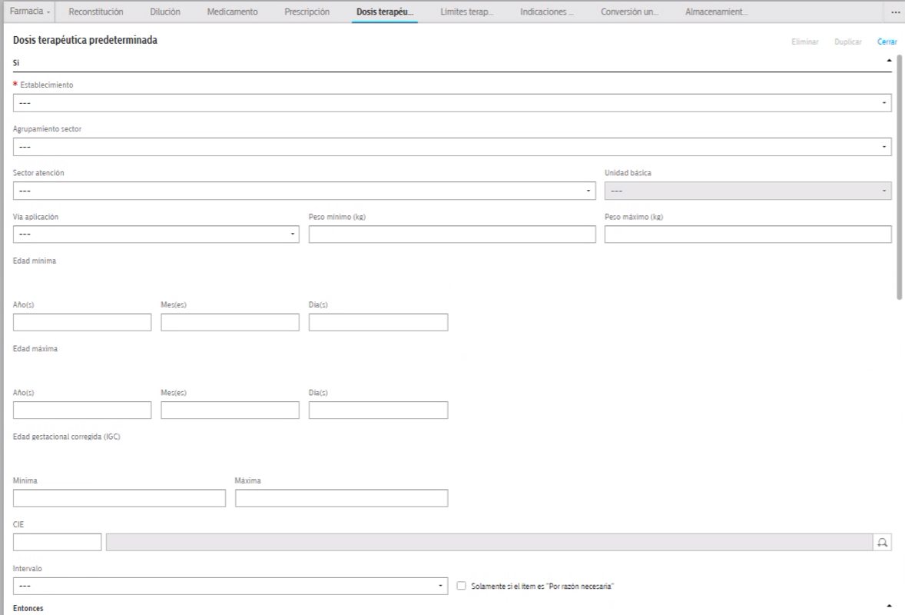
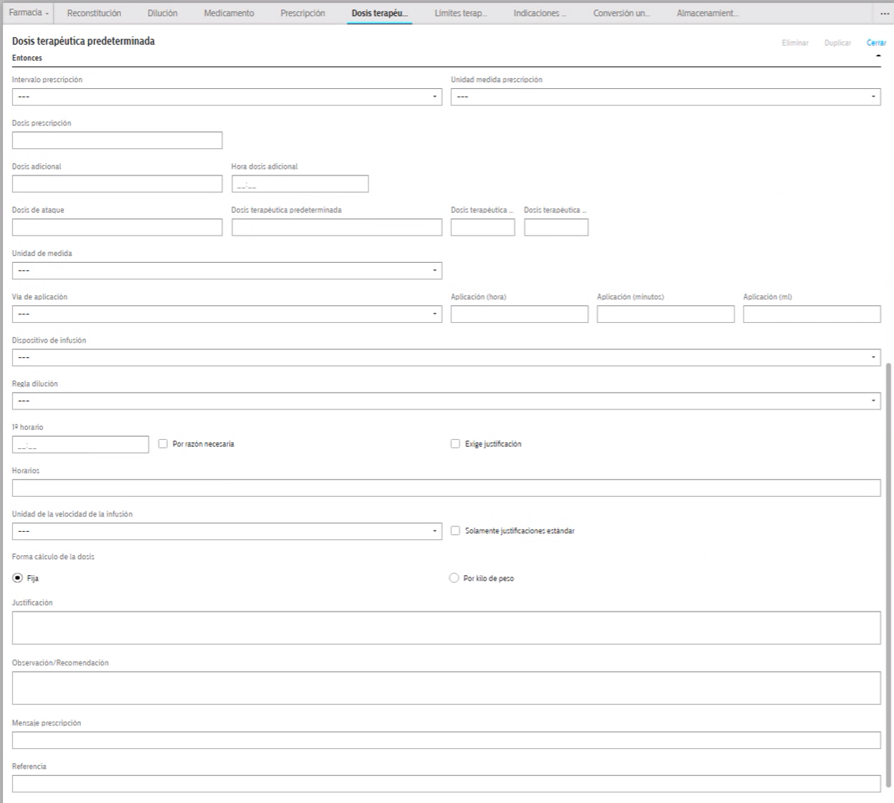
| Campo | Descripción |
|---|---|
| Establecimiento | Seleccionar el establecimiento o sede donde aplica la regla de dosis terapéutica predeterminada. |
| Sector atención | Seleccionar el sector o unidad de atención del paciente donde se aplicará esta configuración. |
| Unidad básica | Seleccionar la unidad asistencial o de internación específica correspondiente. |
| Vía aplicación | Seleccionar la vía de administración del medicamento vinculada a la dosis terapéutica. |
| Peso mínimo (kg) | Informar el peso mínimo del paciente en kilogramos requerido para activar la regla. |
| Peso máximo (kg) | Informar el peso máximo del paciente en kilogramos permitido para aplicar la regla. |
| Edad mínima (Año(s) / Mes(es) / Día(s)) | Informar el límite inferior de edad del paciente (en años, meses o días) para la aplicación de la regla. |
| Edad máxima (Año(s) / Mes(es) / Día(s)) | Informar el límite superior de edad del paciente (en años, meses o días) para la aplicación de la regla. |
| Edad gestacional corregida (IGC) (Mínima / Máxima) | Informar el rango de edad gestacional corregida (mínima y máxima) para pacientes pediátricos o neonatales. |
| CIE | Buscar y asociar el código del diagnóstico (Clasificación Internacional de Enfermedades) específico si la regla aplica según la condición clínica. |
| Intervalo | Seleccionar la frecuencia o intervalo de administración al que condiciona esta dosis. |
| Solamente si el ítem es necesario | Marcar si esta regla de dosis aplica exclusivamente cuando la prescripción es a libre demanda o en caso de ser necesario (PRN). |
| Intervalo prescripción | Seleccionar el intervalo de administración que se predeterminará en la prescripción médica. |
| Unidad medida prescripción | Seleccionar la unidad de medida utilizada para sugerir la dosis predeterminada en la prescripción. |
| Dosis prescripción | Informar la cantidad o valor numérico de la dosis que se presentará por defecto al prescribir. |
| Días previstos para utilización | Informar el número total de días predeterminados para la duración del tratamiento. |
| Dosis especial/ataque | Informar la dosis inicial o de carga que debe sugerirse en la primera administración. |
| Dosis terapéutica (Rango / Valor) | Informar el valor o rango de dosis terapéutica de referencia para el cálculo. |
| Unidad de medida (Dosis terapéutica) | Seleccionar la unidad de medida asociada al cálculo del rango terapéutico. |
| Dispositivo de infusión | Seleccionar el tipo de dispositivo o bomba de infusión requerida para la administración. |
| Regla dilución | Seleccionar la regla de dilución predeterminada que se asociará al momento de prescribir. |
| 1º horario | Informar la hora de inicio sugerida para la primera dosis del esquema de administración. |
| Si es necesario | Marcar si el esquema o dosis indicada es únicamente en caso de ser necesario. |
| Exige justificación | Marcar si el sistema debe solicitar una justificación clínica obligatoria al usuario. |
| Horarios | Especificar los horarios fijos predeterminados de administración dentro de la regla. |
| Forma cálculo de la dosis | Definir el método o fórmula matemática utilizada para calcular la dosis (ej. por peso, por superficie corporal). |
| Observación/Recomendación | Redactar instrucciones, aclaraciones o recomendaciones clínicas que se visualizarán durante la prescripción. |
Y las siguientes casillas:
| Casilla | Descripción |
|---|---|
| Mensaje prescripción | Configurar el mensaje o alerta que se mostrará al médico en el momento de seleccionar el medicamento en la CPOE. |
| Generar el ítem como STAT | Marcar si el medicamento debe ser catalogado de orden inmediata/urgente (STAT) al prescribirse. |
| Aplicar esta regla para soluciones | Marcar para extender la regla de dosis predeterminada cuando el medicamento se prescriba formando parte de una solución. |
| Hacer obligatoria justificación cuando dosis superar permitida | Marcar para exigir que el médico ingrese un motivo válido si la dosis indicada rebasa los límites definidos en la regla. |
| Limpiar 1er horario del medicamento | Marcar para que el sistema borre automáticamente la hora del primer horario predeterminado según la lógica de dispensación |
En esta carpeta se puede crear una regla que diga: Si es un determinado sector de atención y una vía de aplicación, entonces puedo usar una determinada dosis, unidad por día, variando con un intervalo Mín./Max de horas y con un número máximo de días:
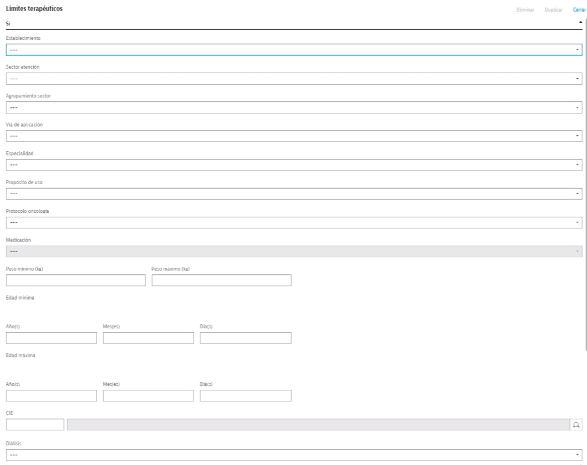
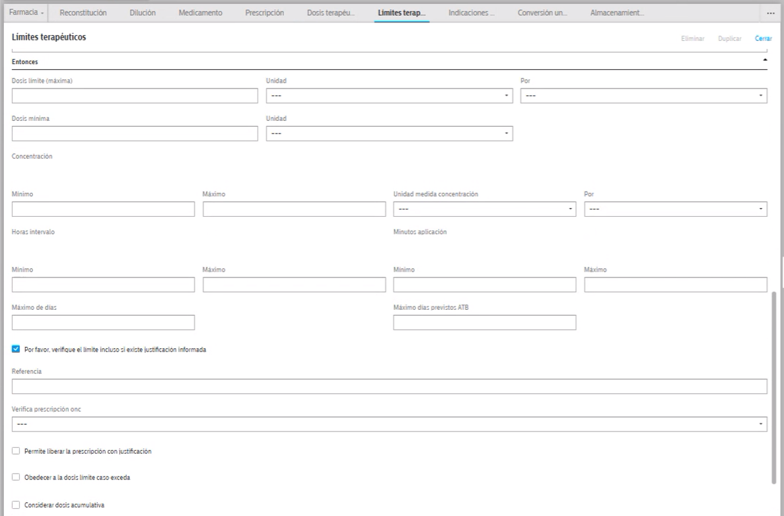
| Campo | Descripción |
|---|---|
| Establecimiento | Seleccionar el establecimiento o sede donde aplica la regla de límites terapéuticos. |
| Agrupamiento sector | Seleccionar el grupo de sectores o áreas de atención a las que aplica el límite terapéutico. |
| Vía de aplicación | Seleccionar la vía de administración del medicamento condicionada por el límite. |
| Especialidad | Seleccionar la especialidad médica sobre la cual aplicará la restricción del límite. |
| Propósito de uso | Seleccionar la finalidad o meta del tratamiento (ej. profiláctico, terapéutico) que activa la regla. |
| Protocolo oncología | Seleccionar el protocolo oncológico específico al que está asociado el límite terapéutico. |
| Medicación | Buscar y asociar el medicamento o esquema específico condicionado por este límite. |
| Peso mínimo (kg) | Informar el peso mínimo del paciente en kilogramos requerido para considerar la regla. |
| Peso máximo (kg) | Informar el peso máximo del paciente en kilogramos permitido para considerar la regla. |
| Edad mínima (Año(s) / Mes(es) / Día(s)) | Informar el límite inferior de edad del paciente (en años, meses o días) para la aplicación de la regla. |
| Edad máxima (Año(s) / Mes(es) / Día(s)) | Informar el límite superior de edad del paciente (en años, meses o días) para la aplicación de la regla. |
| CIE | Buscar y asociar el código del diagnóstico (Clasificación Internacional de Enfermedades) que restringe la dosificación. |
| Dosis límite (máxima) | Informar la cantidad máxima absoluta permitida para la administración del medicamento. |
| Unidad (Dosis límite) | Seleccionar la unidad de medida correspondiente a la dosis límite máxima. |
| Por | Seleccionar la base de cálculo o parámetro sobre el cual se evalúa la dosis máxima (ej. por peso, por dosis, por día). |
| Dosis mínima | Informar la cantidad mínima recomendada o permitida para la administración del medicamento. |
| Unidad (Dosis mínima) | Seleccionar la unidad de medida correspondiente a la dosis mínima. |
| Horas intervalo | Informar el intervalo mínimo de tiempo en horas que debe transcurrir entre dosis. |
| Minutos aplicación | Informar la duración mínima o recomendada en minutos para la infusión/aplicación del fármaco. |
| Máximo de días | Informar el número máximo de días consecutivos que se permite administrar el tratamiento. |
| Máximo días previstos ATB | Informar la cantidad máxima de días previstos para el tratamiento específico con antibióticos. |
| Verificar dosis mismo que justificación informada (casilla) | Marcar si el sistema debe verificar y validar la dosis aun si el usuario ingresó una justificación. |
| Obedecer a la dosis límite caso exceda (casilla) | Marcar para exigir que el sistema fuerce el tope de la dosis límite cuando la cantidad prescrita sea superior. |
| Referencia | Informar la cita bibliográfica, guía de práctica clínica o fuente que respalda el límite terapéutico. |
| Verifica prescripción onc | Seleccionar la regla de verificación específica para prescripciones del área de oncología. |
| Observación | Redactar aclaraciones o notas técnicas adicionales sobre el límite configurado. |
| Mensaje regla | Configurar el texto o mensaje de advertencia que se desplegará en la HCE/CPOE al sobrepasar los límites. |
| Permite liberar la prescripción con justificación | Marcar para permitir que el médico o profesional apruebe y continúe la prescripción si ingresa un motivo válido. |
Permite que sean registradas las recomendaciones al usuario, las reacciones adversas, las interacciones medicamentosas, interacciones con alimentos, etc. La carpeta contiene varias subcarpetas donde se registra la información correspondiente como los riesgos, interacciones, reacciones, etc. Esta información será presentada durante la prescripción cuando aplique. Ver Sección de Alertas.
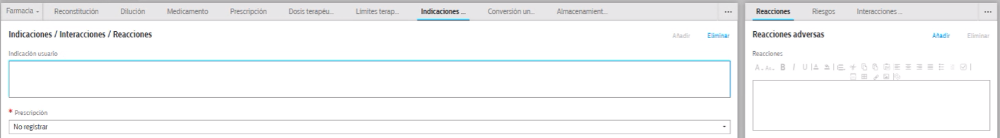
Esta carpeta es primordial para la prescripción pues permite informar las unidades de medida en que puede ser prescrito el ítem y su equivalencia (en el caso de multidosis, se debe hacer la conversión con la cantidad total del empaque, por ejemplo, 1 caja = 20 tabletas.
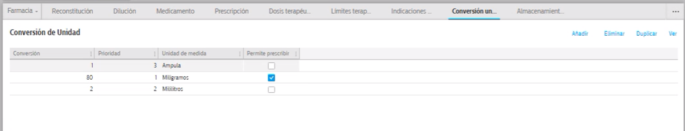
Esta permite agregar las indicaciones y condiciones de almacenamiento, esta información se refleja para enfermería y para las etiquetas de preparación dependiendo de la reglas establecidas:
| Campo | Descripción |
|---|---|
| Forma almacenamiento | Seleccionar las condiciones de temperatura y conservación requeridas para el medicamento (ej. Refrigeración, Temperatura ambiente). |
| Etapa almacenamiento | Seleccionar la fase del proceso farmacoterapéutico en la que aplica la condición de almacenamiento (ej. Embalaje Original, Después de dilución). |
| Estabilidad | Informar el valor numérico del tiempo durante el cual el medicamento mantiene sus propiedades organolépticas y fisicoquímicas en las condiciones indicadas. |
| Tiempo estabilidad | Seleccionar la unidad de medida del tiempo de estabilidad (ej. Días, Horas, Meses). |
| Reconstitución | Seleccionar la regla o vehículo de reconstitución específico al que se vincula esta condición de almacenamiento. |
| Dilución | Seleccionar la regla de dilución específica asociada a estas condiciones de conservación. |
| Referencia | Redactar o indicar la fuente bibliográfica, ficha técnica o literatura oficial que avala la estabilidad configurada. |
| Vía administración | Seleccionar la vía de administración específica a la que aplica este criterio de almacenamiento. |
| Marca | Seleccionar la marca o firma comercial del producto si la regla de estabilidad es exclusiva de un laboratorio fabricante. |
| Establecimiento | Seleccionar el establecimiento o sede donde aplica la regla de almacenamiento. |
| Prioridad | Informar el orden de jerarquía o preferencia de esta regla de almacenamiento cuando coinciden múltiples criterios (ej. 999). |
| Protegido de la luz | Marcar si el medicamento requiere resguardo de la luz artificial o natural (fotosensible) durante esta etapa de almacenamiento. |
| Estabilidad conforme estipulado por el fabricante/proveedor | Marcar para indicar que los límites de estabilidad se apegan estrictamente a lo indicado en el inserto o marbete del fabricante. |
Carpeta para relacionar las posibles vías de administración para el ítem.
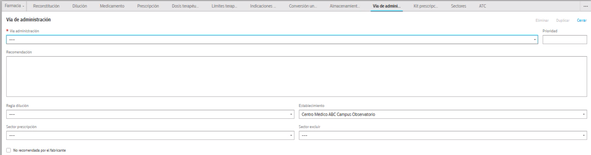
| Campo | Descripción |
|---|---|
| Vía administración | Seleccionar la vía de administración autorizada o sugerida para la aplicación del medicamento (ej. Oral). |
| Prioridad | Informar el orden de prioridad o preferencia de la vía de administración cuando existen múltiples vías configuradas. |
| Recomendación | Redactar observaciones, precauciones o instrucciones específicas para la administración del medicamento por esta vía. |
| Regla dilución | Seleccionar la regla de dilución predeterminada que aplica al administrar el medicamento por esta vía específica. |
| Establecimiento | Seleccionar el establecimiento o sede donde estará disponible esta vía de administración para el medicamento. |
| Sector prescripción | Seleccionar el sector o unidad asistencial donde aplica esta configuración de vía de administración. |
| Sector excluir | Seleccionar el sector o unidad asistencial que queda excluida de utilizar esta vía de administración. |
El registro cuenta con un campo de prioridad entre menor sea el digito es mayor la prioridad y será el orden presentado en las opciones de selección de vías; también es posible marcar si la vía registrada no está recomendada por el fabricante.
Si no es utilizada esta carpeta, todas las vías estarán disponibles para el médico en la prescripción:
Carpeta donde se puede registrar un sector exclusivo para un determinado ítem y también puede marcar si el mismo ítem puede ser prescrito. Es útil para limitar medicamentos de uso exclusivo en las unidades críticas.
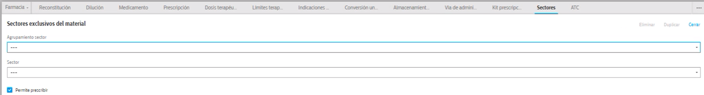
| Campo | Descripción |
|---|---|
| Agrupamiento sector | Seleccionar el grupo de sectores o áreas asistenciales donde estará restringido o disponible el material/medicamento. |
| Sector | Seleccionar el sector o unidad de atención específica (ej. Hospitalización) para definir su exclusividad. |
| Permite prescribir | Marcar para habilitar la prescripción del material/medicamento de manera exclusiva en el sector seleccionado. |
Carpeta donde se puede consultar la anatómica terapéutica química de cada ítem.
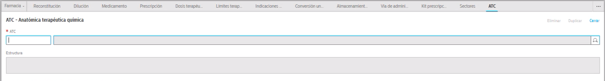
Utilizaremos la función medicamento para el registro de los intervalos que pueden ser utilizados en el ítem registrado; para ingresar a la función damos click en el siguiente ícono. Este modulo permite acceder a ciertos campos del módulo de Registro de Materiales específicos para esta clasificación.
Dentro de la función utilizamos el buscador de materiales para localizar el ítem a configurar. Una vez localizado el ítem, del lado derecho de la pantalla seleccionamos la carpeta “Intervalos del Medicamento”
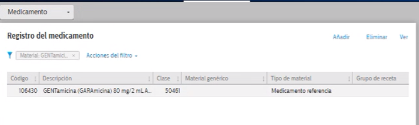
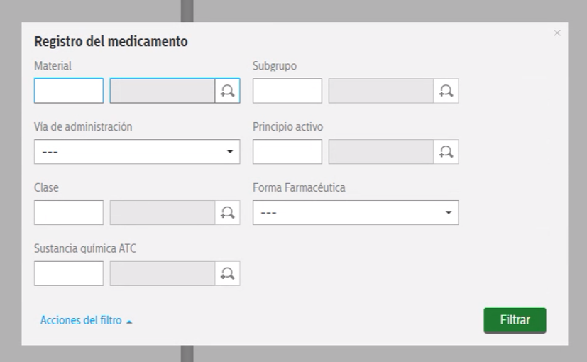
Dentro de esta carpeta, agregamos los intervalos que puede ser utilizado en el ítem, dando click en añadir, seleccionamos el intervalo y guardamos el registro.
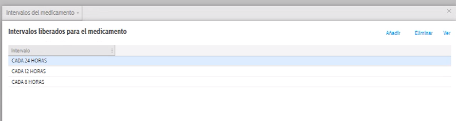
Si no se especifica al menos un intervalo, todos los liberados estarán disponibles para la prescripción.
Para poder realizar el registro de un nuevo principio activo, primero se debe realizar la búsqueda y después añadir:
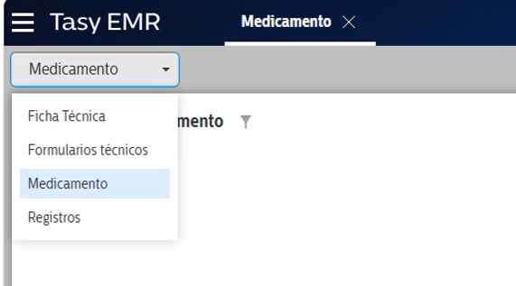
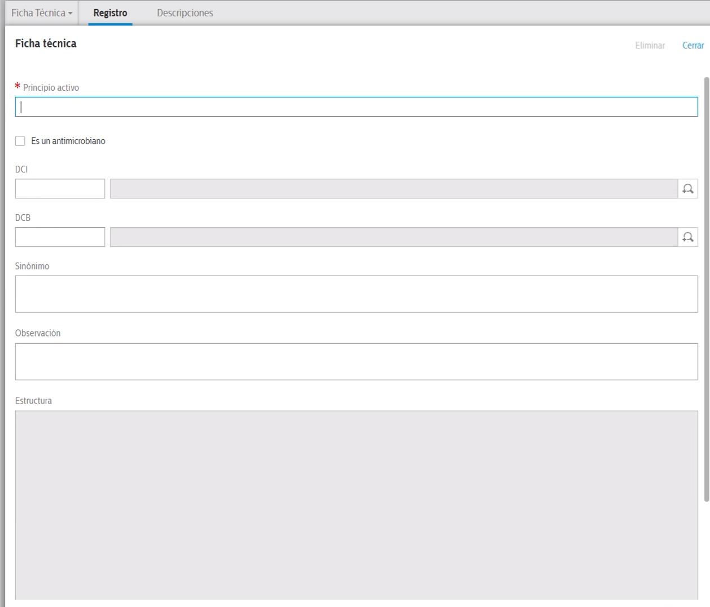
En caso de requerir crear un nuevo registro correspondiente al Anatomical Therapeutic Chemical Classification System (ATC), deberá usar el menú para seleccionar la opción “Registros”:
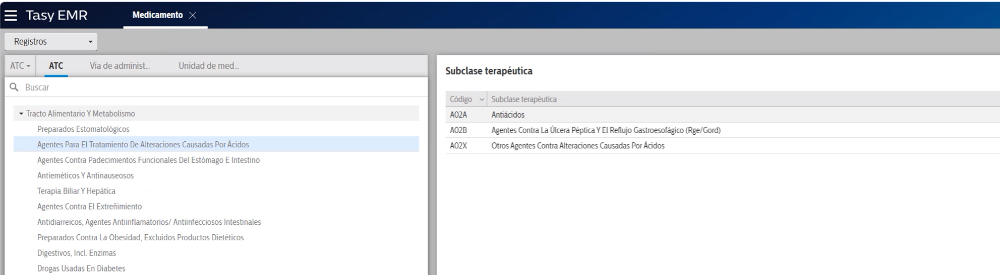
Al dar doble click sobre cualquier de los grupos es posible visualizar los subgrupos farmacológicos o terapéuticos denominados “Clase terapéutica” (nivel 2). A continuación, se muestra un ejemplo de con el segundo nivel del grupo A. En caso de requerir añadir un nuevo registro de clase es necesario usar la opción “Añadir” de la esquina superior derecha.
Por otro lado, si el usuario requiere añadir un nuevo registro para el nivel 3(Subclase terapéutica) deberá seleccionar el nivel 2 en el menú izquierdo y dar doble clic para mostrar las subclases existentes. Posteriormente puede usar la opción “Añadir” para crear un nuevo código.
Para añadir un registro del nivel 4 (Grupo químico) es necesario seleccionar el registro de nivel 3 para mostrar los registros existentes. El usuario puede usar puede usar la opción “Añadir” para crear un nuevo código.
Finalmente, el registro de los principios activos (correspondiente al nivel 5) debe realizarse seleccionando el nivel 4 correspondiente y añadiendo un nuevo registro en la pantalla de lado derecho usando el botón “Añadir”.
Al automatizar la validación mediante reglas se crea la posibilidad de generar alertas visuales, alertas desplegables y alertas limitantes o que pidan justificación, una mala configuración inadecuada puede generar una fatiga visual, o detener el flujo. Las que están configuradas actualmente son:
Se activan al momento en que el médico selecciona o modifica un medicamento en la prescripción. Evalúan los parámetros parametrizados en el catálogo de materiales y medicamentos:
Los requisitos mínimos y las mejores prácticas se plasman a continuación, dependiente de la naturaleza del medicamento puede ser necesario configuraciones adicionales. Sin embargo para la gran mayoría de estas configuraciones específicas son estandarizadas:
| Item | Opción por default |
|---|---|
| Material stock: | Siempre debe estar referenciado al mismo código, ya que controla los movimientos del stock. |
| Cobrar al paciente | Solo se desmarca en caso de que no sea necesario generar un movimiento de cargo por este material |
| Situación activa | Permite generar movimientos de stock y prescripción |
| Disponible en el marcado | Solo se debe cambiar ante desabastos. No limita la prescripción, pero genera alertas. |
| Familia | Es la mejor práctica llenarlo cuando exista una coincidencia ya que permite controlar otras reglas, como las alergias |
Son las presentaciones en dosis definidas y suficientes para una administración, incluye tabletas, cápsulas ampolletas orales
Al iniciar se deben configurar la conversión de unidades equivalentes a la unidad de prescripción en la sección de Conversión de unidades:
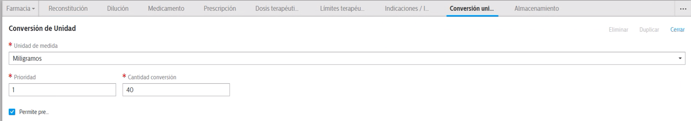
La unidad de prescripción siempre debe ser una unidad científica y aprobada. Los medicamentos pueden tener más de una unidad seleccionada (ej. miligramo y gramo). En caso de que contengan mas de un activo y no se pueda expresar como la suma de sus componentes. Se puede expresar en la unidad de solicitud (tableta).
Para limitar las vías de administración se deben agregarse en la pestana correspondiente y si es necesario que aparezca la recomendación se debe agregar en este campo:
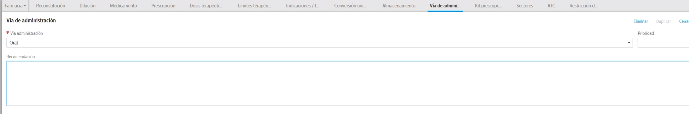
En “unidad de medida” (pestaña medicamento) se debe especificar si esta vía será la que aparezca al realizar una prescripción en CPOE de modo que no tenga que seleccionarse manualmente, esto es similar para el caso de “vía de administración” e Intervalo estándar de prescripción en la pestaña “prescripción”.
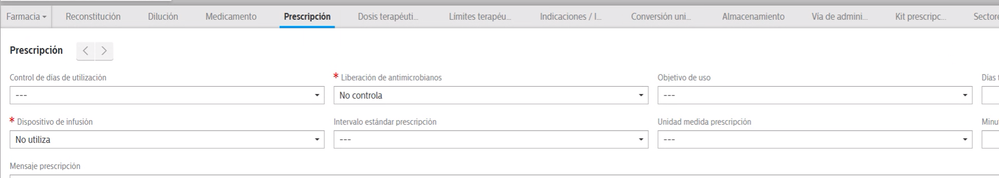
De acuerdo al tipo de material se pueden agregar alertas visuales de la prescripción, se deben considerar siempre al menos dos casillas “Generar lote para Dispensación de Prescripciones” y “prescripción” para que se genere el lote correspondiente al prescribir y “prescripción” pero para que se puedan visualizar en CPOE.
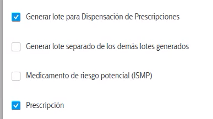
Son aquellos que no son parenterales y que la dosis es variable para cada paciente, por ejemplo, los ungüentos, enjuagues o gotas. Para estas presentaciones se dispensa por presentación completa y no se fracciona.
Los campos mínimos para un correcto flujo son:
Definir una vía de administración (las más utilizada debe ser la predeterminada, solo solo hay una, debe aparecer automáticamente)
Si se coloca una dosis sugerida esta debe ser la estándar de administración
Si no se coloca la dosis sugerida tomara el total que incluye la presentación
La unidad de medida para realizar la prescripción, por ejemplo: Aplicación, gota, lavado, lenguaje, etc.). Llenar la Tabla de registro de materiales Farmacia/ conversión de unidades esta debe ser un aproximado y se debe mantener para todas las presentaciones del mismo activo y forma farmacéutica (ej. ¡ tubo equivale a 5 aplicaciones) para fines de la prescripción en CPOE no tiene relevancia, ver reglas de prescripción.
Los campos mínimos que deben estar configurados son:
Registro Materiales/ Farmacia /Prescripción:
Generar lote de Dispensación de Prescripciones
Prescripción
Permite dosis Fraccionadas en la REP
En la conversión de unidades se debe incluir únicamente la unidad total y la unidad de aplicación, esto para evitar que el médico pueda realizar una prescripción confusa.
Se deben liberar todas las vías necesarias:
Medicamento/Registro del medicamento/Intervalos del medicamento
Nota: En las observaciones de vía (ver alertas) se recomienda como buena práctica incluir un texto que obligue al prescriptor a dar más detalles, por ejemplo: “aplicar en … “, oído ___, etc
Incluye a los medicamentos que se prescriben en fracciones fijas, y que cada presentación comercial dispensada por farmacia tiene múltiples dosis para un mismo paciente, por ejemplo, jarabes pediátricos, suspensiones o soluciones inhaladas.
Política: Los medicamentos siempre deben prescribirse en unidades permitidas como son: g, mg, unidades internacionales, no se debe usar mL, tableta u otra unidad adicional, a menos que se trate de un medicamento con más de 2 activos y no se manejan la dosificación como la suma de ambos.
Estos medicamentos deberemos especificarlos al igual que los Medicamentos sin dosis estándar y además se debe especificar que son multidosis (Registro de material/Farmacia/Medicamento):
Nota: como recomendación en las observaciones asociadas a la vía se pueden especificar conversiones adicionales si se administra el medicamento en una unidad diferente a la prescrita
Para los medicamentos intravenosos se deben realizar las configuraciones correspondientes previas además de considerar añadir el diluyente para las vías que aplique.
Infusiones continúas de infusión constante
Infusiones dinámicas
Las nutriciones enterales se visualizan en el módulo de Registros de Nutrición, aquellos materiales que caigan en esta categoría podrán editarse desde este módulo, lo cual afecta ciertos campos del Registro de Materiales.
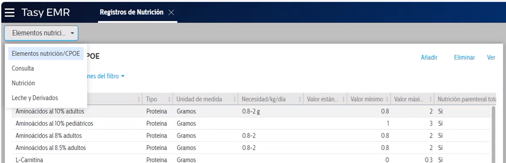
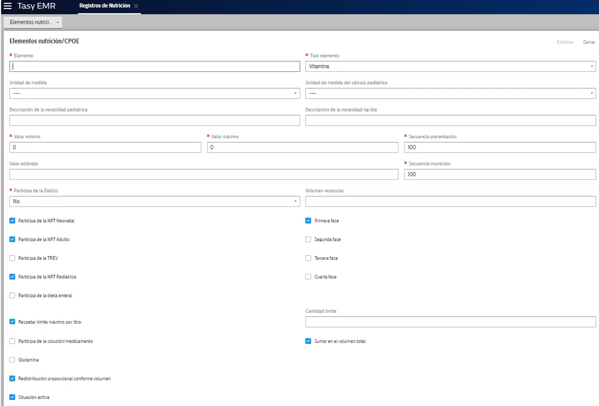
| Campo | Descripción |
|---|---|
| Elemento | Informar la denominación o nombre del elemento nutrimental a registrar. |
| Tipo elemento | Seleccionar la clasificación o categoría del componente (ej. Vitamina). |
| Unidad de medida | Seleccionar la unidad de medida estándar del elemento en la formulación. |
| Unidad de medida del cálculo pediátrico | Seleccionar la unidad de medida específica para los cálculos de dosificación en pediatría. |
| Descripción de la necesidad pediátrica | Redactar las especificaciones u observaciones sobre requerimientos nutricionales en pacientes pediátricos. |
| Descripción de la necesidad/kg/día | Redactar la descripción o cálculo del requerimiento nutricional diario por kilogramo de peso del paciente. |
| Valor mínimo | Informar la cantidad o dosis mínima permitida del elemento (ej. 0). |
| Valor máximo | Informar la cantidad o dosis máxima permitida del elemento (ej. 0). |
| Secuencia presentación | Informar el orden numérico de despliegue del elemento en la pantalla de la CPOE (ej. 100). |
| Valor estándar | Informar la cantidad o concentración predeterminada del elemento al cargarlo en la prescripción. |
| Secuencia impresión | Informar el orden numérico en el que aparecerá impreso el elemento en las etiquetas o reportes (ej. 100). |
| Participa de la Diálisis | Seleccionar si el elemento forma parte de los componentes considerados para pacientes en tratamiento de diálisis (ej. No). |
| Volumen recalcular | Informar el volumen de referencia para realizar el ajuste o recalculación automática del elemento. |
| Participa de la NPT Neonatal | Marcar si el elemento está disponible para su formulación en Nutrición Parenteral Total Neonatal. |
| Primera fase / Segunda fase / Tercera fase / Cuarta fase | Marcar la fase o etapa específica de preparación/administración en la que debe incluirse el elemento. |
| Participa de la NPT Adulto | Marcar si el elemento está disponible para su formulación en Nutrición Parenteral Total para Adultos. |
| Participa de la TREV | Marcar si el elemento forma parte de los componentes para Terapia de Reposición o Terapia Enteral/Endovenosa específica. |
| Participa de la NPT Pediátrica | Marcar si el elemento está disponible para su formulación en Nutrición Parenteral Total Pediátrica. |
| Participa de la dieta enteral | Marcar si el elemento puede integrarse en formulaciones de nutrición enteral. |
| Cantidad límite | Informar el valor límite cuantitativo del elemento dentro de la mezcla. |
| Respetar límite máximo por litro | Marcar para exigir que el sistema no permita exceder la concentración máxima configurada por litro de solución. |
| Sumar en el volumen total | Marcar para contabilizar el volumen de este elemento dentro del volumen global de la mezcla/solución. |
| Participa de la solución/medicamento | Marcar si el elemento puede prescribirse o mezclarse de forma integrada con soluciones base o medicamentos. |
| Glutamina | Marcar si el elemento corresponde a glutamina para aplicar reglas específicas de aminoácidos. |
| Redistribución proporcional conforme volumen | Marcar para autorizar al sistema a reajustar la proporción del elemento automáticamente al modificar el volumen total de la mezcla. |
| Situación activa | Marcar para mantener activo el registro del elemento nutricional en el sistema. |
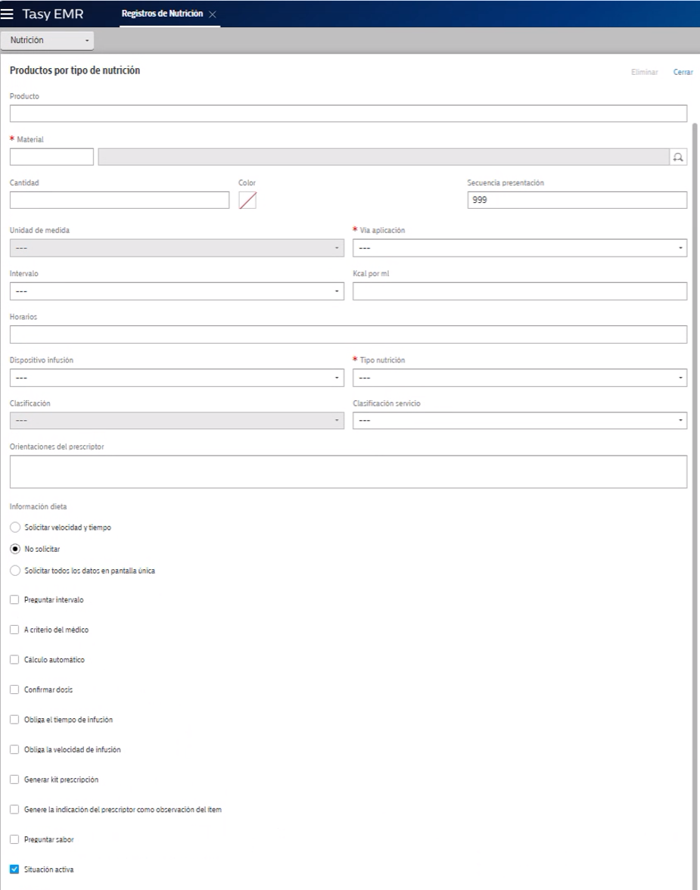
| Campo | Descripción |
|---|---|
| Producto | Informar o buscar la denominación del producto nutricional. |
| Material | Buscar y seleccionar el código y la descripción del material/insumo del catálogo asociado a la formulación nutricional. |
| Cantidad | Informar la cantidad predeterminada del producto nutricional. |
| Color | Seleccionar la paleta o identificador de color para la representación visual del producto en la pantalla o impresiones. |
| Secuencia presentación | Informar el orden o secuencia numérica en la que se despliega el ítem dentro del catálogo (ej. 999). |
| Unidad de medida | Seleccionar la unidad de medida correspondiente a la cantidad informada. |
| Vía aplicación | Seleccionar la vía de administración autorizada para la nutrición (ej. Entérica, Parenteral, Oral). |
| Intervalo | Seleccionar la frecuencia o intervalo estándar de administración del producto nutricional. |
| Kcal por ml | Informar la densidad calórica expresada en kilocalorías por mililitro del producto. |
| Horarios | Configurar los horarios fijos predeterminados de administración. |
| Dispositivo infusión | Seleccionar el tipo de dispositivo o bomba de infusión requerida para su administración. |
| Tipo nutrición | Seleccionar la categoría o modalidad de nutrición a la que pertenece el producto. |
| Clasificación | Seleccionar el grupo o tipo de fórmula nutricional. |
| Clasificación servicio | Seleccionar la categoría del servicio asistencial al que se asocia la formulación. |
| Orientaciones del prescriptor | Redactar indicaciones o instrucciones específicas dirigidas al personal que administra la nutrición. |
| Información dieta (Opciones de selección) | Configurar el comportamiento de la pantalla de prescripción seleccionando una de las siguientes opciones: - Solicitar velocidad y tiempo: Habilita la captura de velocidad de infusión y tiempo total. - No solicitar: Desactiva la solicitud de dichos parámetros. - Solicitar todos los datos en pantalla única: Despliega todos los campos de configuración en una sola ventana. |
| Preguntar intervalo | Marcar para exigir que el médico especifique el intervalo al momento de realizar la prescripción. |
| A criterio del médico | Marcar si la administración queda sujeta a la valoración del profesional de la salud. |
| Cálculo automático | Marcar para habilitar el cálculo automatizado de volumen o calorías en el sistema. |
| Confirmar dosis | Marcar para exigir una confirmación manual de la dosis al prescribir el ítem. |
| Obliga el tiempo de infusión | Marcar para requerir obligatoriamente el ingreso del tiempo total de infusión al prescribir. |
| Obliga la velocidad de infusión | Marcar para requerir obligatoriamente el ingreso de la velocidad de infusión al prescribir. |
| Generar kit prescripción | Marcar si el ítem debe desencadenar la creación de un paquete o kit preconfigurado en la prescripción. |
| Genere la indicación del prescriptor como observación del ítem | Marcar para que las orientaciones capturadas por el médico se transfieran automáticamente como observaciones al renglón de la prescripción. |
| Preguntar sabor | Marcar para solicitar la elección del sabor del producto nutricional durante el registro de la orden médica. |
| Situación activa | Marcar para mantener activo el registro del producto nutricional en el catálogo. |
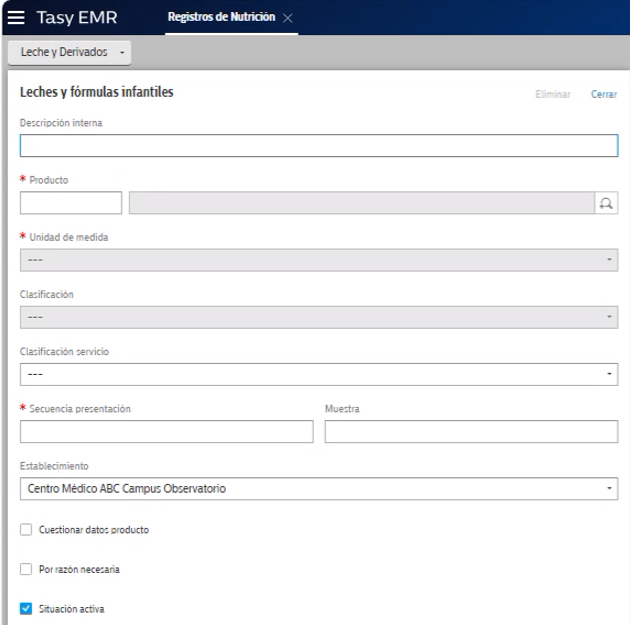
| Campo | Descripción |
|---|---|
| Descripción interna | Redactar o informar la denominación técnica interna utilizada para identificar la leche o fórmula infantil en el sistema. |
| Producto | Buscar y seleccionar el código y la descripción del producto o fórmula infantil a registrar. |
| Unidad de medida | Seleccionar la unidad de medida estándar utilizada para la dosificación o dispensación del producto. |
| Clasificación | Seleccionar la categoría o grupo nutricional al que pertenece la fórmula infantil. |
| Clasificación servicio | Seleccionar la clasificación correspondiente al servicio asistencial o de dietética que gestiona el producto. |
| Secuencia presentación | Informar el orden numérico de prioridad en el que se visualizará este producto en la lista o catálogo. |
| Muestra | Informar el tipo o identificador de muestra utilizado para pruebas o presentación del producto. |
| Establecimiento | Seleccionar la sede o establecimiento donde aplica el registro de la fórmula infantil (ej. Centro Médico ABC Campus Observatorio). |
| Cuestionar datos producto | Marcar para exigir la verificación o confirmación de los datos del producto durante la prescripción médica. |
| Por razón necesaria | Marcar si el producto puede ser indicado o administrado a libre demanda / según la necesidad del paciente (PRN). |
| Situación activa | Marcar para mantener activo el registro de la leche o fórmula infantil dentro del sistema. |
Esquemas en bolo
Esquema en infusión contínua